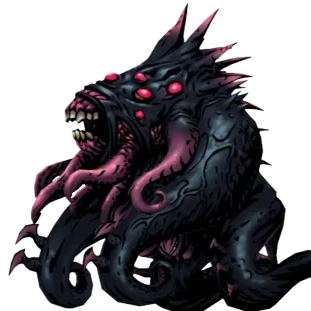
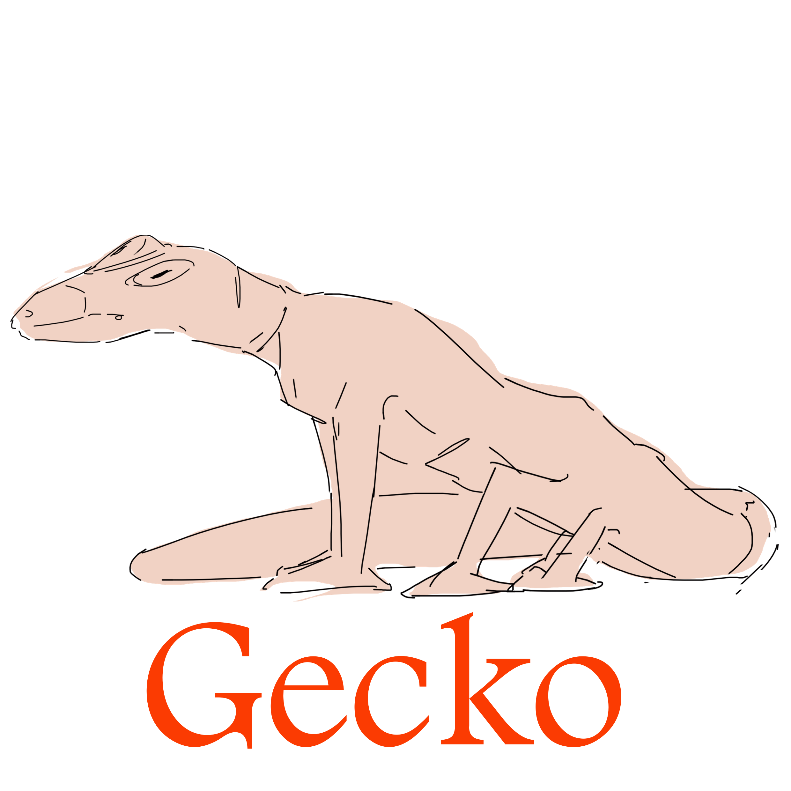
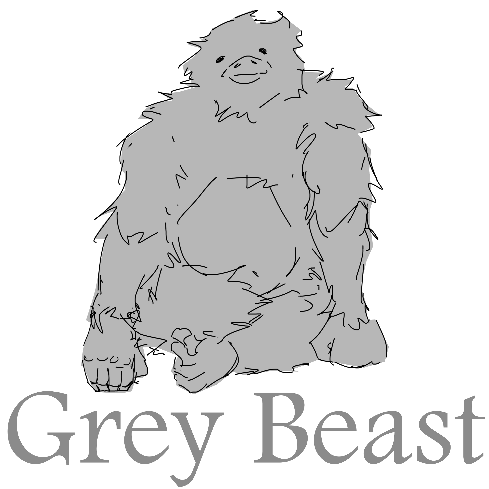
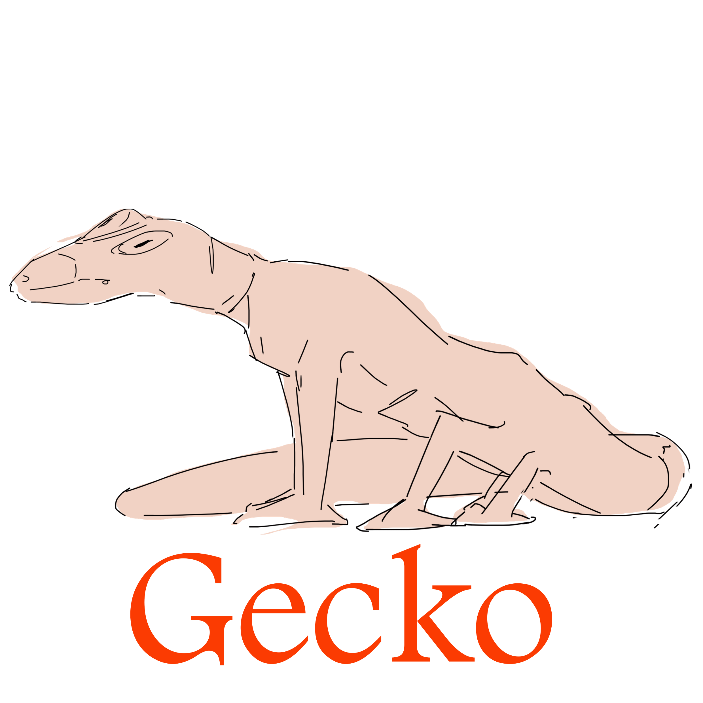
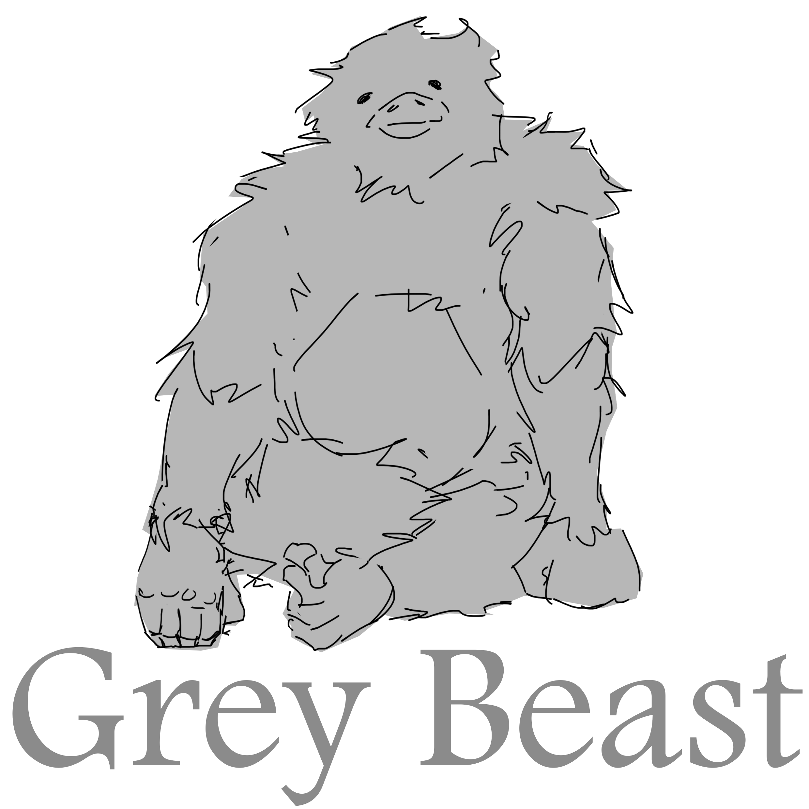
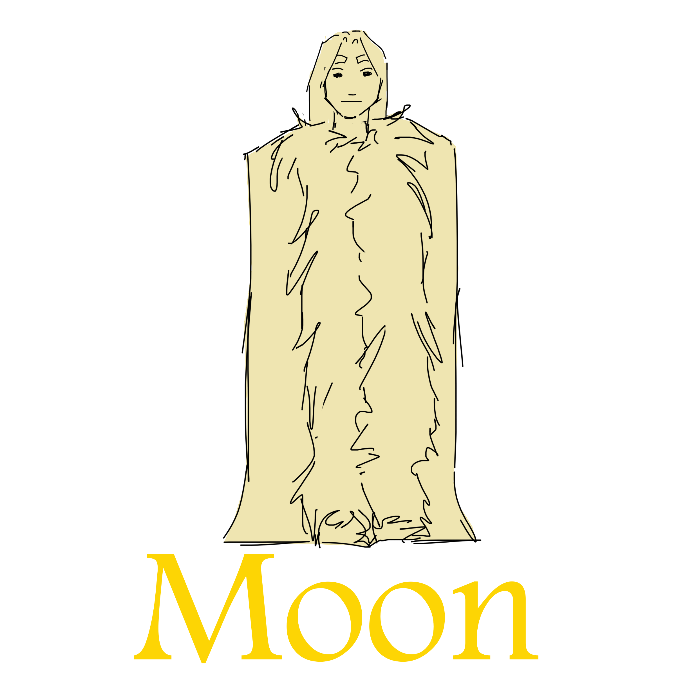
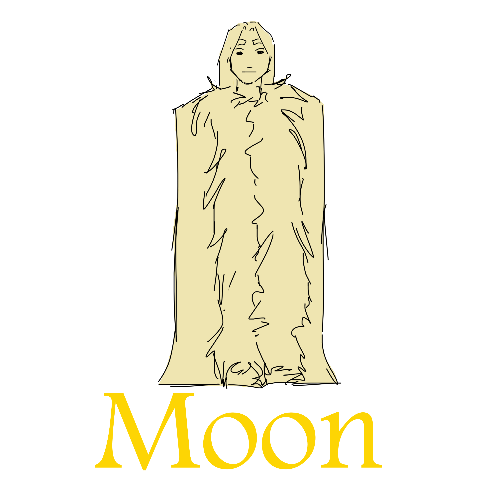
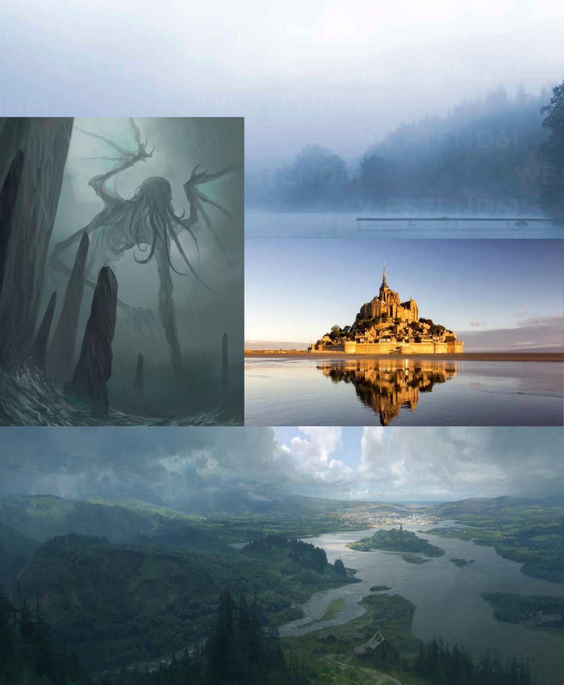
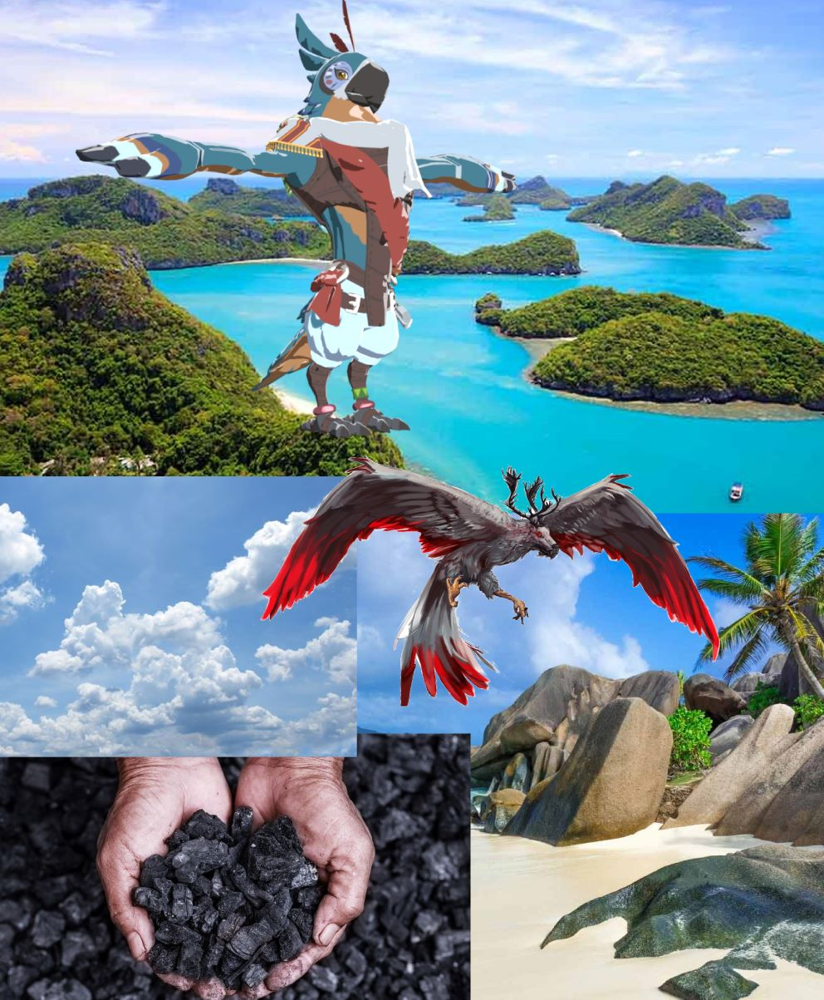
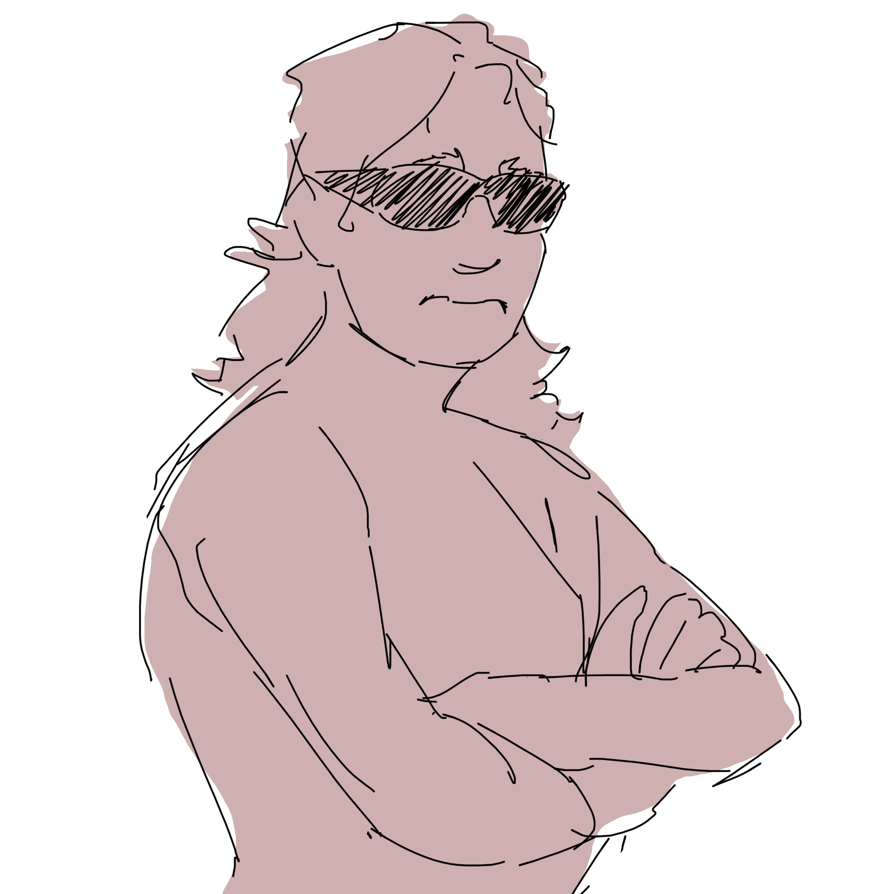

Ongrad

Ongrad is a world of stark dualites. Long winters capable of raising water levels with frozen ice. The summers are hot enough to dry up rivers and parch lakes. Two continents complement each other as they swim in the 7 great seas. Flora adapted to heartyer to sustain the seasons, or weaker to die off waiting dormant beneath the frozen ground. Fauna developed to cope with days & nights lasting months.
Demi-Gods
Demi-gods are sentient creatures gifted powers by any number of the Seven Gods. They are functionally immortal as their bodies do not degrade from the passage of time when in their domain. They reside in the domain that they are linked to but can leave it at will. Their domains are a reflection of the demi-god, the god which blessed the demi-god, and the surrounding biome. They do not interact very much with the world outside of their domains.
Denizens
A god employs demi-gods and denizens, a denizen is always one of the gifted races. A denizen is created when a god blesses someone, that being's mind and body will be altered by the deities. Which ever gift the god represent will be taken from the denizen, i.e. a language god's blessing will remove the persons ability to speak and understand language. Denizens most often stay in their god's temple but are most often treated with great reverence when outside their temple. Denizens have extended lifespans and increased strength.
Domains
Deities are linked to biomes, a domain is a reflection of its deity. Demi-gods control the domains and have control over what goes on and who comes into their domains. It is much more difficult to get into a domain than it is to get out, a being must be invited into the domain by its deity. Domains very in size, they can be anywhere from dozens of square miles to an acre of land. From they outside looking in they appear to just be a colorful shimmer if they can be seen at all. They take up actual real space and are physically blocked off from the world by an translucent magic barrier. A deity sets up a barrier by drawing a closed loop with their magical chalk. After the loop is drawn the barrier goes up and the domain begins to form to reflect what the residing deity desires. Because they are reflections of their deity they can often be different from the surrounding area.
Seven Continentals
When a god gives their blessing to an animal the animal will gain that attribute which they had not previously had. For example: if a frog is blessed by the god of language it will gain the ability to learn and speak languages. When a god gives their blessing to a sharp creature a double positive is created and they will loose that attribute which they already had. For example: if a human is blessed by the god of language they will loose the ability to speak or understand language.
Each of the seven represent an attribute specific to sharp creatures. The god's are unable to meet face to face because leaving their domain's means putting their lives at risk. Gods create demi-gods to perform tasks and commuincate with one another. Their temples are filled with their worshipers and devout followers. A piramid of importance can represent the mass of a god's temple: at the bottom is generic sharp worshipers, they have no special connection to their god and are often comming and going or making pilgramges. Then are the denizens of another god, the amount of which veries depending on the god nessesities. For instance, the denizens of the god of agriculture who can not farm for themselves, would need the deniziens of another god to farm for them. The language god would need the most imported denizens becuase his denizens would loose the ability to speak or understand language and therefore be mostly useless. Imported denizens can not be completely trusted in the same way as a denizine of one's own so they stay low in the totem of power. Next on the perverbial priamid would be denizens of one's own. At the top are demi-gods, animals given the gift by two or more gods.
The seven Continental deities are the greatest power, they control entire continents under their domain. They are largely indifferent and reclusive and don’t interact much with the outside world. They are the only deities actually referred to as gods, and their denizens are referred to as disciples. Each of the seven altars those who it chooses in a specific way such that any normal being can recognize them and relate them to a specific of the Seven. Cole is sort of an exception because she starves herself in an effort to distance herself from her god. The god of the western half of the south continent is Cole’s god, a possessive eldritch that normally takes the form of a woman. The disciples of this god are what Cole’s natural form looks like: tall, horned, cloven hooved, with a large tail and wings. The god of Gwin’s islands is a large bird, and the altered bodies of Gwin’s disciples can be singled out by their feathers. The god of the cradle continent is intellectual and has a love of linguistics, which is the reason why the continent only uses one written language. Becoming the disciple of more than one god is forbidden, a god will not take in a disciple of another god if the disciple is one of the sentient species. If a being is the disciple of at least two gods then it can perform a deietic ritual, and draw a domain to become a deity. This can happen one of two ways, either with the permission of the god or by tricking the god without their permission. The first way is the safest as it does not incur the wrath of the Seven, it is reserved for dull creatures and involves a few steps. First a god in want of a deity will contact at least one other god and request their aid in making a new deity. The god will choose a dull being such as a gecko, wolf, or any other creature without intellect. They will put them in a crate and send them to the one or more other gods involved. Those gods upon receiving the creature will perform the rites making the creature their disciple. The creature will gain intelligence, power, and attributes of the god from this, it will be caged again and sent to the next god if there are more. Once the last god in the agreement has performed their rites, the creature will be sent back to the original god for the final ceremony. At this time the creature may be incredibly difficult to contain and dangerous if let loose, so a tight watch and many guards (usually disciples of the original god) are placed upon it. Finally with the creature back the original god will perform the last set of rites, making it their disciple. The god moves the creature somewhere inside their domain, then performs the deictic ritual for it and draws out its domain. From there the creature will find itself, altering its body and domain until it settles into its existence of a deity. The other way to become a deity is for sharp creatures (creatures who are able to learn two languages). If a being manages to trick a god into becoming their disciple despite being the disciple of another god then that being has the power to become a deity. Once a being is a disciple of multiple gods they are known as unfaithful and will be punished if found out by the gods. The more gods they trick the more power said being will become when it performs the deictic ritual and draws their own domain.
God
Wiki
God of Creation
God of Language
God of Medicine
God of Ethics
God of Agriculture
God of Cooking
God of Deceit
Sun Pedro Martínez de la Rosa
Gecko
Grey Beast
Ronan Reyes
Moon
Seven Continentals
Named Deities
 



 

Overview
The god of creation is worshiped as the god who gives the ability to create tools & structures. They reside in a monumental palace befitting the god of creation deep in the mountain jungles of their continent. Their palace is of white marble with inlays of gold and emerald. The god is assosciated with order, tools, buildings, and clothes.
Physical Description
- Tahm Kench catfish
- small upper body, large lower body
- Lots of tentacles
Overview
The god of language is worshiped as the god who gave the gifted the ability to speak and understand language. Their temple is fairly modest because this god is constantly flying from Island to Island. This god is associated with intelegence, memory.
Domain
This god is unique because it has multiple domains; all separated from one another by the ocean. They reside over all 13 of Gwin's islands (the connecting islands between the two continents.
Physical Description
- Lots of feathers
- Very avian with a beak
Overview
The god of medicine is worshiped as the god responsible the ability to heal through medicine and surgery. Rather than a temple, the god of medicine exists and a nomadic
Domain
paragraph
Physical Description
- Sand themes or clockwork themes
Overview
.
Domain
Their palace is the only readily accessible to the general public. It is a massive black monolith in the heart of the
Physical Description
- Sand themes or clockwork themes
Overview
The god of agriculture is worshiped as the god who brought gift of animal husbandry the ability to farm and cultivate plant life. They reside over the south continent, sharing the land mass with another god, equally split down the center. They reside in a grand temple which floats on a very large mountain lake and is surrounded by a thick fog. With the water theme I drew a lot of inspiration from Cthulhu for this god.
Domain
.
Beasts of Burden
Some places it is seen as sacrilegious to use beasts of burden when farming. Because cattle were not made with the natural gift of agriculture, giving them the capacity to farm by creating tools for them could be seen as playing god.
Physical Description
- Books & Knowledge
Overview
.
Domain
.
Physical Description
Overview
.
Domain
.
Physical Description
- Books & Knowledge
Domain
Sun shared a domain with his partner for thousands of years until one day he was kicked out. Now he travels the continent searching for a way back.
Patreon Gods
- Medicine
- Cooking
- Agriculture


Appearance
The gecko resembles a 25 foot long palmato gecko with six legs. He has one large eye on the top of his head and two fake eyes where his normal eyes should be. The gecko's skin is mostly brown. He can climb on the walls or bend over backwards to make eye contact with whoever he's talking to, either way his back is toward you. The gecko's fake eyes and communication style represents his paranoid nature since he never displays vulnerability by facing his stomach towards others.
Domain
He lives in a sand dune desert, his domain is under the sand, a constant small stream of sand piles in the dark center like an hourglass. It's very dark, it's brightest near the center where the opening causes the sand to trickle. The domain is in the shape of a large 50 dome. He has no denizens.
The gecko's domain is based on Najka's lair from dark souls 2. It's a dry dark space with the only source of light streaming through an opening where sand constantly pours through. Gecko is constantly sweeping the sand to the corners of the cave.
Patreon Gods
- Creation
- Language
- Deceit
Appearance
The Grey Beast is modeled after old legends of beasts and mysterious things to fear in the woods, most specifically the questing beast from Arthurian legend. The Grey Beast has the body and head of a bear with extended hind legs, the hands and feet of an ape, the mouth of a bird, and the hide of a yak. It stands almost 15 feet tall on all fours and has small beady eyes.
Role in the Story: Sun takes the beast out of it's domain and forces it to track Cole after he looses possession of her.
Domain
The domain of the Grey Beast a large domain about with a 10 mile diameter. The domain is a lush deciduous forest with lots of streams running through them. There are lots of animals in the domain, they are drawn into the Grey Beast's domain and blocked from exiting after they have entered the barrier. Deep in the As the demi-god of creation and agriculture the beast farms and
Patreon Gods
- Agriculture
- Deceit
- Creation
Sun meets the Grey Beast
Sun enters into the gray beasts domain, he can immediately sense entering the presence of a deity, a presence which conceals his magic from the Seven. He clicks the lock and hesitantly removes his necklace. With a few dozen words he casts an insignificant canter causing a nearly imperceptible amount of smoke to escape his nostrils. He waits holding the necklace above his head. Minutes pass in silence as he braces for a god to collapse the world in around him. But no retribution comes. Sun closes his eyes chanting in another, older language. His throat swells, his eyes bulge, smoke seeps out of his nose, and from between his teeth. The smoke gets heavier, thicker, more viscous the air smells pungent of burning ash wood. His voice raises and echoes, he falls to his knees and clutches at his chest and throat without breaking his rhythmic chant. The wind picks up pushing the smoke that threatens to choke him into the air above. Sun's voice abruptly cuts off, the last of the smoke trailing through his teeth to join the rest of the cloud. His demeanor changes, a bottomless unrighteous arrogance subtly morphs into a unchecked unbound confidence. His leering becomes looming that shrinks the sky around him.
Sun cracks his wrists and wets his lips. He clears his throat. "I call upon the deity which resides in this domain!" Sun shouts in no particular direction other than up. The wind rustles the trees but Sun gets no answer. He follows a stream up to a more densely forested area and demands the deity's presence once again. "I know you're around here, I can feel you. How many of the Seven did you visit before you came here? No more than three I'd wager, come out and let me have a look at you"
In response a bassy roar shakes the trees and resonates Sun's sternum like a tuning fork. Accompanying the roar in the shadows of the trees are a pair of large eyes that are too high up and too far apart. The creature looms as it stalks on broad shoulders crushing the wooded areas underfoot, breaking enough branches to imitate the crackling of a bonfire as it walks into view out of the thicket. First an arm, a burly arm coated in long, coarse, gray hair that spans for meters. Its hand is orange which resembles Sun's own hand: four fingers and a thumb with three accompanying joints on each finger. Sun spreads his arms in a disarming gesture as he begins chanting low and quiet. The gray beast's eyes narrow, it follows into view with its second arm, torso and hind legs. The beast's head is small, its eyes dark and beady, its face covered in fur save for its orange bill. The creature is a behemoth standing an imposing 4 meters tall, its hind hands anatomically identical to the ones in the front. Without breaking eye contact Sun backpedals but the gray beast slowly closes the distance, stalking nearer to Sun on its four legs. Its hackles rise and its long tail sways back and forth. The closer it gets the faster Sun's rhythmic chants and the lower the beast's head shrinks beneath its shoulder blades. The predator moves its hips closer to the ground like a gray spring of sinew loading tension. Sun, just as abruptly as the time before, ceases chanting.
The beast collapses, its knees buckle and it claws at the dirt but finds no purchase. Sun draws his breath and begins another spell, the beast turns in fear and crawls away getting back onto its feet. Sun chants creating thousands of blue transparent gloved hands that appear in flashes clearing the surrounding area of debris. They pull leaves off trees, remove twigs, and pull plants up by their roots from the ground. In the pattern of a small rectangle around his feet, the hands etch symbols in the dirt. The hands dissipate, Sun empties the smoke from his lungs and takes in a breath of clean air. He continues chanting to create four lines of hieroglyphs. Each of the new lines propagating from the center of one of the four lines forming the established square, and each hieroglyphic line facing one of the four cardinal directions. The lines of glyphs open veins in his arms pooling blood in the air. In the seconds it takes to gather his blood the hieroglyphs surrounding him are etched deep into the dirt and stonic writings are uniformly pressed into the dirt in a wide circle connecting with the four outcroppings of writing. A haze appears around him, smoke billows and tendrils slither and shoot out of the four sections inside the circle grabbing nearby life: bunnies, lizards, and birds are brought in the circle surrounding him. An unseen force crushes the animals together, their blood mixes and seeps with an unnatural quickness through the newly etched troughs in the dirt. Sun kneels to place his palms on the ground, they mix with the blood and smoke rises from the dirt out through the space between his fingers. His words reach inhuman speeds as he enters the spell's crescendo. Without warning Sun's voice cuts off, his lips forming words silently under the concentration of smoke. The blood of Sun and the creatures sink into the ground and in the distance the beast howls.
Sun clutches his stomach with both of his arms, his forehead against the dirt. Ecstasy from the return to magic and adrenaline from the encounter mixes inside him turning his stomach. He laughs psychotically, drool running up his cheeks. He gathers himself, he wipes his face clean with his dirty hands and stands up straight. He follows in the direction of the roar until he finds the gray beast. He stands over the beast as it violently struggles against the newfound fetters shackling its limbs to the ground.
Appearance
Old and sad.
Domain
Castle.
Patreon Gods
- Deceit
- Cooking
- Agriculture
Appearance
Tall and sharp.
Domain
Commune.
Patreon Gods
- Medicine
- Cooking
- Agriculture